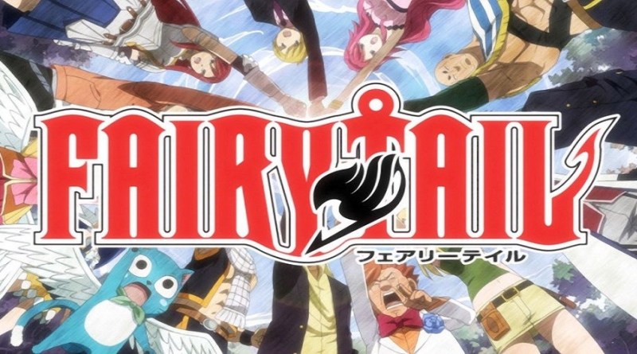
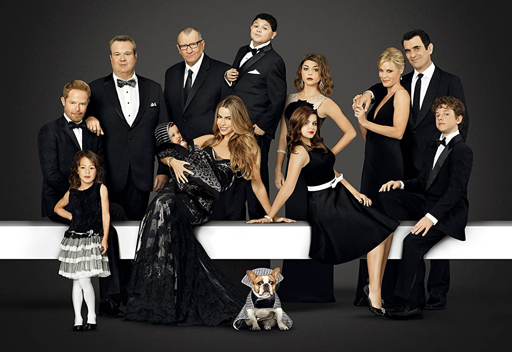
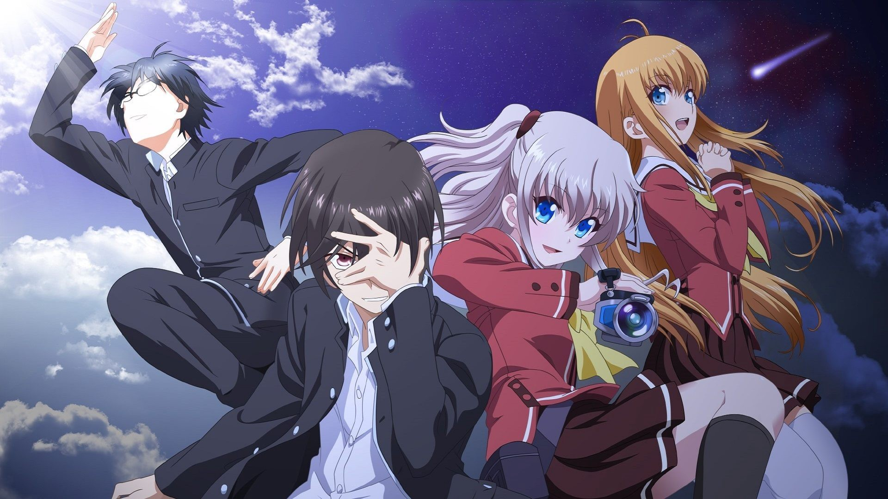

Emily S-Tv recommendations
Assassination Classroom

Earth is left in jeopardy after an immensely powerful tentacled creature suddenly appears and destroys 70% of the moon, leaving it permanently in the shape of a crescent.
The organism claims that within a year he will destroy the planet next, but offers mankind a chance to avert this fate. In class 3-E, the End Class of Kunugigaoka Junior High School,
he starts working as a homeroom teacher where he teaches his students regular subjects, as well as the ways of assassination. The Japanese government promises a reward of $100 million to whoever among the students succeeds in killing the organism.
However, this proves to be a highly unachievable task, as not only does he have several superpowers at his disposal, including accelerated regeneration, visual cloning, an invincible form, and the ability to move and fly at Mach 20,
but he is also the best teacher they could ask for, helping them to improve their grades, individual skills, and prospects for the future.
To be honest, I personally think that this is one of the best animes to be created. It's funny with good action scenes and I even cried.
Fairy Tail

The world of Earth-land is home to numerous guilds where wizards apply their magic for paid job requests. Natsu Dragneel, a Dragon Slayer wizard from the Fairy Tail guild, explores the Kingdom of Fiore
in search of his missing adoptive father, the dragon Igneel. During his journey, he befriends a young celestial wizard named Lucy Heartfilia and invites her to join Fairy Tail. Lucy forms a team with Natsu and his cat-like Exceed partner,
Happy, which is joined by other guild members: Gray Fullbuster, an ice wizard; Erza Scarlet, a magical knight; and Wendy Marvell and Carla, another Dragon Slayer and Exceed duo. The team embark on numerous missions together, which include subduing criminals
, illegal dark guilds, and ancient Etherious demons.
Fairy Tail is considerably longer than Assassination Classroom but I still think that it's worth watching. The plot gets a bit messy at times but it's still fairly easy to follow.
Howl's Moving Castle

Sophie, a diligent teenage girl working in her family's hat shop, finds her life thrown into turmoil when a handsome-but-mysterious wizard named Howl sweeps her off her feet. This innocent encounter enrages the vain and conniving Witch of the Waste,
who transforms Sophie into a 90-year-old woman. Sophie's efforts to break the curse bring her to Howl's magical moving castle, where she befriends Markl, Howl's apprentice, and the hot-headed fire demon Calcifer. Her love and support have a major impact on Howl, who
can be maddeningly self-indulgent and singularly noble. He defies royal orders to participate in a meaningless war and risks his life to bring peace to the kingdom.
Like all Studio Ghibli movies, the animation is very nice and the plot is heartwarming. The ending is more straight foward than Spirited Away. Recommended 10/10.
Modern Family

As the name suggests, this family represents a modern-day family and episodes are comically based on situations that many families encounter in real life.
The show is pretty long (spanning across 11 seasons) but I feel like it's worth watching. It's really funny and you will grow attached to the characters.
Naruto and Naruto Shippuden


In the first Naruto, the characters are all younger and their troubles aren't as humanity concerning. In Naruto Shippuden, many things happen but in shorter words, Naruto has to find Sasuke and
both of them have to save the world together
There are a lot of filler episodes and I mean A LOT. You should be fine if you skip some of them. The summary of each arc is probably: Sasuke gets 20% more edgy and insane and Naruto gets stronger
Charlotte

In an alternate world, supernatural abilities manifest in certain children once they hit puberty. Yuu is one such individual, but he is able to lead an average life by concealing his powers. He is recruited into
a school where there are other people with superpowers and they stop crimes.
This show definitely took some turns that I didn't expect from its lighthearted beginning. Its worth watching if you love tears.
Avatar: The Last Airbender

The world is divided into four nations -- the Water Tribe, the Earth Kingdom, the Fire Nation and and the Air Nomads -- each represented by a natural element for which the nation is named. Benders have the ability
to control and manipulate the element from their nation. Only the Avatar is the master of all four elements. The ruthless Fire Nation wants to conquer the world but the only bender who has enough power, the Avatar, has disappeared ... until now.
His tribe soon discovers that Aang is the long-lost Avatar. Now Katara and Sokka must safeguard Aang on his journey to master all four elements and save the world from the Fire Natio
I feel like everyone has already watched this or at least have heard of it. If you haven't watched it yet, you should. This is one of those "must watch before death" type of show.